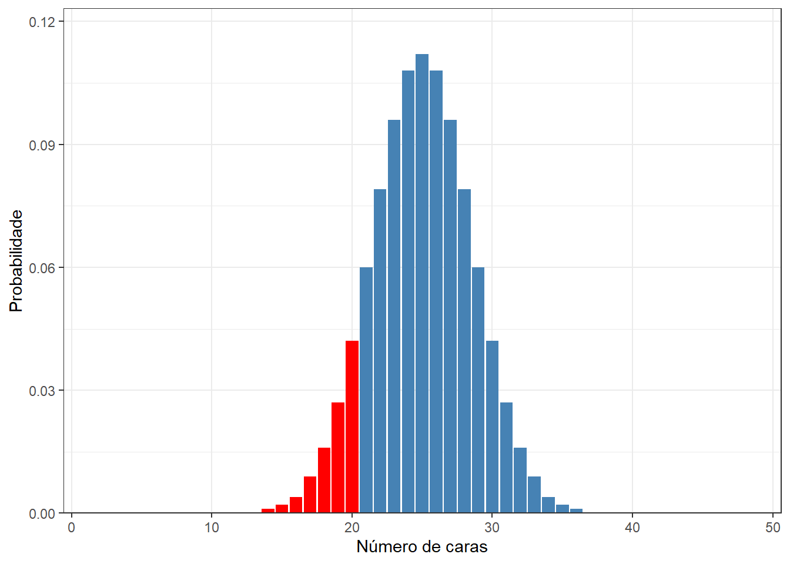
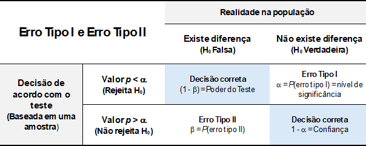

O valor p é um dos conceitos mais utilizados — e mais mal interpretados — em estatística (1,2). Antes de defini-lo formalmente, vamos construir a intuição necessária a partir de um exemplo simples e concreto: o lançamento de uma moeda. Partindo das probabilidades básicas, chegaremos naturalmente à ideia central por trás de qualquer teste de hipóteses.
13.1 Probabilidades no lançamento de moedas
13.1.1 Lançamento de uma moeda
Ao se lançar uma moeda honesta, não adulterada, a chance de cair cara1 é igual a:
1 Entenda-se, aqui, que o resultado cara é igual a sucesso.
A moeda tem duas faces (cara e coroa) , logo, a chance é de 1:2 \(\to\)\(1/2 = 0,50 \to 50\%\)
Ou seja, uma probabilidade2 muito pequena, igual 4.185915%.
2 Para evitar que a saída apareça em notação científica, usamos a função format(probabilidade, scientific = FALSE)
Exercício 3
Qual a probabilidade de se ter, na distribuição da Figura 13.4, ATÉ 20 caras?
Se o objetivo é encontrar a probabilidade de ter até 20 caras (ou seja, 0, 1, 2, 3, 4, …, ou 20 sucessos), podemos usar a função de probabilidade acumulada:
Ou, como a probabilidade de obter até 20 caras (ou seja, de 0 a 20 sucessos) é a soma exata das probabilidades individuais de sair 0 caras, 1 cara, 2 caras, e assim por diante, até 20 caras, pode ser calculado assim:
sum(dbinom(0:20, size =50, prob =0.5))
[1] 0.1013194

Figura 13.5: Probabilidade acumulada de cair até 20 caras
Exercício 4
Imagine que, em um determinado jogo, cara é “sucesso” e ganha o jogo quem conseguir, em 50 lançamentos, 20 ou menos caras3 , ou seja, na Figura 13.5, o resultado cair na faixa vermelha. Olhando o gráfico, se deduz que banca terá uma chance de 9:1 de sair lucrando! Ou seja, a probabilidade de um jogador ganhar, ao fazer 50 lançamentos de uma moeda, é de aproximadamente 10%.
Suponha, agora, que neste mesmo jogo, um indivíduo usa a sua moeda na aposta e ganha 3 vezes seguida. O que posso deduzir sobre a honestidade da moeda?
3 Consequentemente, \(\ge 30\) coroas.
Para ganhar três vezes seguidas (assumindo que as rodadas são independentes), multiplicamos as probabilidades:
Ou seja, a probabilidade de isso acontecer puramente por sorte com uma moeda honesta é de apenas 0,1% (cerca de 1 chance em 1.000).
O que podemos deduzir?
Em estatística, quando um evento com uma probabilidade tão absurdamente baixa acontece, nós começamos a rejeitar a ideia de que foi “apenas sorte”.
Considerando a visão frequentista, em um teste de hipóteses normal, as nossas hipóteses estatísticas seriam:
Hipótese Nula\(H_{0}\): a moeda é honesta Hipóteses Alternativa\(H_{1}\): a moeda não é honesta
Usando uma confiança de 95%, o nível de significância é de \(\alpha = 0.05\)4. Dessa forma, rejeita-se \(H_{0}\) se a probabilidade encontrada for \(\le \alpha = 0.05\). A probabilidade de ganhar 3 vezes seguidas é de 0,1% (0,001), muito menor que 0,05 e, assim, podemos rejeitar a hipótese (\(H_{0}\)) de honestidade da moeda. A moeda provavelmente está alterada para a sair mais coroas (facilitando o resultado de “20 ou menos caras”).
4 Essa é a tradição arbitrária, usada em estatística. Ou seja, se a probabilidade for igual a 0,049, se rejeita a hipóteses nula \(H_{0}\); se for 0,051, ela não é rejeitada. Estranho, né? Mas é assim…
O dado observado é tão extremo que a explicação de que “a moeda não é honesta” se torna infinitamente mais provável e, se fosse em um cassino, o jogador teria sido convidado a se retirar na terceira rodada!
13.1.4 O que é valor de p?
Definição
É a probabilidade de observar dados tão ou mais extremos que os encontrados, caso a hipótese nula seja verdadeira(3,4).
13.1.4.1 Conectando com o exemplo
No exemplo, o valor p = 0,001 significa: “se a moeda fosse honesta (\(H_0\) verdadeira), a probabilidade de um jogador ganhar 3 vezes seguidas seria de apenas 0,1%“. Como esse valor é menor que \(\alpha = 0{,}05\), rejeita-se \(H_0\) e concluí-se que a moeda provavelmente está adulterada.
A função da estatística termina aqui. A decisão final cabe ao pesquisador: rejeitar ou não \(H_0\) deve sempre estar apoiado em uma fundamentação teórica — não apenas no valor p isolado.
13.1.4.2 O que o valor pnão é
As interpretações equivocadas do valor p são extremamente comuns (1,2). É tão importante saber o que ele não representa quanto a sua definição formal:
Interpretações incorretas do valor p
Não é a probabilidade de \(H_0\) ser verdadeira. Um valor p = 0,001 não significa que há 99,9% de chance de a moeda estar adulterada — o valor p nada diz sobre a probabilidade de uma hipótese ser ou não verdadeira.
Não é a probabilidade de o resultado ter ocorrido por acaso. É a probabilidade de resultados tão ou mais extremos ocorrerem, supondo que \(H_0\) é verdadeira — uma distinção sutil, mas fundamental.
Não mede a importância ou o tamanho do efeito. Um valor p muito pequeno pode resultar simplesmente de uma amostra grande, mesmo que o efeito prático seja irrelevante. Sempre avalie a magnitude do efeito separadamente.
Não garante replicação. Um resultado com p < 0,05 não significa que o mesmo achado se repetirá em um novo estudo.
13.1.4.3 Resumindo
O valor p é uma ferramenta de decisão, não uma medida de verdade. Ele informa se os dados observados são compatíveis com a hipótese nula — e, quando não são, ele autoriza a rejeitá-la com um grau de confiança pré-estabelecido. A interpretação final, porém, depende sempre do contexto, da teoria e do julgamento do pesquisador.
13.1.5 Erros de Decisão
Nessa tomada de decisão, erros são cometidos, por exemplo, pode-se rejeitar uma hipótese nula verdadeira. Nesse caso, tem-se um resultado falso positivo, conclui-se que existe um efeito quando na verdade ele não existe. Este erro é denominado de erro tipo I e a probabilidade de se cometer esse tipo de erro é denominado de \(\alpha\).
Outra possibilidade de erro é quando não se rejeita uma hipótese nula falsa. É o erro denominado de erro tipo II. Nesse caso, tem-se um falso negativo; não se conseguiu encontrar um efeito que realmente existe. A probabilidade de cometer esse tipo de erro é chamada de \(\beta\).
Na Figura 13.6 estão resumidas as possíveis consequências na tomada de decisão em um teste de hipótese (5).

Figura 13.6: Erros na tomada de decisão
13.1.6 Significância estatística versus relevância prática
Rejeitar \(H_0\) não significa, necessariamente, que o efeito encontrado seja importante. Essa é uma das armadilhas mais comuns na interpretação de resultados estatísticos.
O valor p depende de dois fatores: o tamanho do efeito e o tamanho da amostra. Com amostras muito grandes, até diferenças minúsculas e sem nenhum significado prático produzem valores p extremamente pequenos.
13.1.6.1 Um exemplo com a moeda
Imagine que, ao invés de uma moeda completamente honesta, temos uma moeda com um viés muito sutil: a probabilidade de cara é 0,51 em vez de 0,50 — uma diferença de apenas 1 ponto percentual. Na prática, em qualquer jogo humano, essa diferença seria imperceptível.
O que acontece ao testar essa moeda com amostras de tamanhos diferentes?
Tabela 13.2: Valor p e tamanho do efeito para diferentes tamanhos de amostra (P(cara) = 0,51)
Lançamentos (n)
Caras observadas
Valor p
Diferença real
100
51
0.9204
1.0%
500
255
0.6874
1.0%
1000
510
0.5480
1.0%
5000
2550
0.1615
1.0%
10000
5100
0.0466
1.0%
100000
51000
0.0000
1.0%
Observe que a diferença real entre a moeda viciada e a honesta é sempre a mesma: 1 ponto percentual. O que muda é apenas o número de lançamentos. Com 100 lançamentos, o teste não detecta nada. Com 100.000 lançamentos, o p é minúsculo — mesmo que a moeda seja praticamente honesta para qualquer fim prático.
13.1.6.2 Tamanho do efeito
Para complementar o valor p, devemos sempre reportar uma medida de tamanho do efeito (effect size) — uma quantidade que descreve a magnitude da diferença, independentemente do tamanho da amostra. Para proporções, as medidas mais comuns são:
Medida
O que representa
Diferença de proporções
\(\hat{p} - p_0\) — a mais intuitiva; no exemplo, vale 0,01
h de Cohen
Diferença padronizada entre proporções; \(< 0{,}2\) é considerado efeito pequeno (6)
Razão de chances (odds ratio)
Quanto maior a chance de um evento em relação ao outro
Regra prática
Sempre apresente o valor pjunto com uma medida de tamanho do efeito e os intervalos de confiança. Um resultado pode ser estatisticamente significante e praticamente irrelevante — ou vice-versa.
O paradoxo inverso: efeito grande, amostra pequena
O problema oposto também existe. Com amostras muito pequenas, um efeito real e expressivo pode não atingir significância estatística — não porque o efeito inexista, mas porque o estudo não tem poder estatístico suficiente para detectá-lo.
Imagine uma moeda com viés intenso: P(cara) = 0,70. Em apenas 10 lançamentos, observamos 7 caras — exatamente o esperado para essa moeda. O teste, porém, não rejeita \(H_0\):
binom.test(7, 10, p =0.5)$p.value
[1] 0.34375
O valor p é de aproximadamente 0,34 — muito acima de 0,05. Ainda assim, a moeda tem um viés real de 20 pontos percentuais em relação a uma moeda honesta. A amostra simplesmente é pequena demais para distinguir esse efeito do acaso.
Concluir que “não há efeito” com base em p > 0,05 em uma amostra pequena é um erro tão grave quanto ignorar a magnitude do efeito em amostras grandes. A ausência de significância estatística não é a mesma coisa que ausência de efeito.
13.1.6.3 Poder estatístico
O poder estatístico de um teste é a probabilidade de rejeitar corretamente \(H_0\) quando ela é de fato falsa — ou seja, a capacidade do estudo de detectar um efeito real quando ele existe:
\[\text{Poder} = 1 - \beta\]
onde \(\beta\) é a probabilidade de erro do tipo II: não rejeitar \(H_0\) quando ela deveria ser rejeitada (@fig-power).
Por convenção, busca-se um poder mínimo de 80% no planejamento de estudos (7).
No exemplo da moeda viciada (P(cara) = 0,70, \(n\) = 10), o poder pode ser calculado com o pacote pwr(8)5:
5 A função pwr.p.test() é usada para testes de uma proporção (como o teste da moeda). Quando o objetivo é comparar duas proporções independentes — por exemplo, a taxa de sucesso de dois tratamentos —, a função equivalente é pwr.2p.test(), com a mesma estrutura de argumentos.
library(pwr)pwr.p.test(h =ES.h(p1 =0.70, p2 =0.50), # h de Cohen para proporçõesn =10,sig.level =0.05)
proportion power calculation for binomial distribution (arcsine transformation)
h = 0.4115168
n = 10
sig.level = 0.05
power = 0.2556201
alternative = two.sided
Com apenas 10 lançamentos, o poder é de ~26%: em cerca de 3 a cada 4 experimentos, o teste falharia em detectar a moeda viciada, mesmo com um viés de 20 pontos percentuais.
Para descobrir quantos lançamentos seriam necessários para atingir 80% de poder, deixamos n em aberto e fornecemos o poder desejado:
proportion power calculation for binomial distribution (arcsine transformation)
h = 0.4115168
n = 46.34804
sig.level = 0.05
power = 0.8
alternative = two.sided
Seriam necessários 47 lançamentos para ter 80% de chance de detectar o viés. Com apenas 10, o estudo estava seriamente subdimensionado.
No exemplo da moeda, um pesquisador responsável diria: “O teste foi significante (p < 0,05), mas a diferença estimada é de apenas 1 ponto percentual, sem relevância prática para o contexto estudado.” Já em um estudo com amostra pequena, o correto seria: “O teste não atingiu significância (p = 0,34), mas o efeito estimado é de 20 pontos percentuais — uma amostra maior seria necessária para confirmar ou descartar esse achado.”
Guyatt G, Jaeschke R, Heddle N, et al. Basic statistics for clinicians: 1. Hypothesis testing. CMAJ: Canadian Medical Association Journal. 1995;152(1):27.
4.
Menezes RX de, Burattini MN. Testes de Hipótese e intervalos de Confiança. Em: Massad E, Menezes RX de, Silveira PSP, Ortega NRS, editores. Métodos Quantitativos em Medicina. Barueri, São Paulo: Editora Manole Ltda.; 2004. p. 225–41.
5.
Fletcher RH, Fletcher SW, Fletcher GS. Acaso. Em: Epidemiologia Clínica: Elementos Essenciais. Quinta Edição. Artmed Editora; 2014. p. 108–9.
6.
Cohen J. Quantitative methods in psychology: A power primer. Psychol Bull. 1992;112:1155–9.
7.
Cohen J. Statistical power analysis for the behavioral sciences. 2nd Edition. Routledge; 1988.
# Valor *p* {#sec-valorp}```{r}#| label: setup#| include: falselibrary(tidyverse)library(flextable)```O **valor *p*** é um dos conceitos mais utilizados — e mais mal interpretados — em estatística [@goodman2008dirty; @wasserstein2016asa]. Antes de defini-lo formalmente, vamos construir a intuição necessária a partir de um exemplo simples e concreto: o lançamento de uma moeda. Partindo das probabilidades básicas, chegaremos naturalmente à ideia central por trás de qualquer teste de hipóteses.## Probabilidades no lançamento de moedas### Lançamento de uma moedaAo se lançar uma moeda honesta, não adulterada, a chance de cair **cara**[^13-valor_p-1] é igual a:[^13-valor_p-1]: Entenda-se, aqui, que o resultado **cara** é igual a **sucesso**.- A moeda tem duas faces (**cara** e **coroa**) , logo, a chance é de 1:2 $\to$ $1/2 = 0,50 \to 50\%$### Três lançamentos de uma moeda justaQual a probabilidade de cair três caras?- 8 opções $\to$ $1/8 = 0,125 \to 12,5\%$Colocando todas as opções em uma tabela, temos:```{r}#| label: tbl-moeda3#| tbl-cap: "Probabilidades em 3 lançamentos de uma moeda honesta"tibble( Opção =c("Ca-Ca-Ca", "Ca-Ca-Co", "Ca-Co-Ca", "Ca-Co-Co","Co-Ca-Ca", "Co-Ca-Co", "Co-Co-Ca", "Co-Co-Co"),Caras =c(3, 2, 2, 1, 2, 1, 1, 0),p =rep(0.125, 8)) |>flextable() |>align(j =c("Caras", "p"), align ="center", part ="all") |>bg(i =~ Caras ==3, bg ="gold") |>autofit()```::: callout-note## Exercício 11) Olhando a @tbl-moeda3, qual a probabilidade de cair duas caras em três lançamentos?- Existem 3 opções onde temos 2 caras (Ca-Ca-Co, Ca-Co-Ca e Co-Ca-Ca)- $0,125 \times 3 = 0,375 \to 37,5\%$2) Agora, qual a probabilidade de cairem duas ou mais caras?- As opções são as mesmas anteriores acrescida da opção de três caras- $0,125 \times 4 = 0,50 \to 50\%$:::Colocando as distribuições da tabela em um gráfico, temos:```{r}#| out-width: "70%"#| out-height: "70%"#| fig-align: 'center'#| label: fig-moeda3#| fig-cap: "Distribuição dos 3 lançamentos de uma moeda honesta"tibble(caras =c(0:3),p =c(1, 3, 3, 1) /8) |>ggplot(aes(x =factor(caras), y = p)) +geom_col() +geom_text(aes(label = scales::percent(p, accuracy =0.1)), vjust =-0.5) +scale_y_continuous(expand =expansion(mult =c(0, 0.1))) +labs(x ="Número de caras",y ="Probabilidade" ) +theme_bw()```### Aumentando o número de lançamentos da moeda#### Seis lançamentos```{r}#| output: falsedist6 <-dbinom(x =0:6, size =6, prob =0.5)df6 <-data.frame(caras =0:6, p =round(dist6, 3))```Em um gráfico de barras, temos:```{r}#| label: fig-moeda6#| fig-cap: "Distribuição de 6 lançamentos de uma moeda honesta"#| out-width: "70%"#| out-height: "70%"#| fig-align: 'center'df6 |>ggplot(aes(x =factor(caras), y = p)) +geom_col() +geom_text(aes(label = scales::percent(p, accuracy =0.1)), vjust =-0.5) +scale_y_continuous(expand =expansion(mult =c(0, 0.1))) +labs(x ="Número de caras",y ="Probabilidade" ) +theme_bw()```#### Doze lançamentos```{r}#| message: false#| echo: true#| out-width: "70%"#| out-height: "70%"#| fig-align: 'center'#| label: fig-moeda12#| fig-cap: "Distribuição de 12 lançamentos de uma moeda honesta"dist12 <-dbinom(x =0:12, size =12, prob =0.5)df12 <-data.frame(caras =0:12, p =round(dist12, 3))df12 |>ggplot(aes(x =factor(caras), y = p)) +geom_col() +geom_text(aes(label = scales::percent(p, accuracy =0.1)), vjust =-0.5) +scale_y_continuous(expand =expansion(mult =c(0, 0.1))) +labs(x ="Número de caras",y ="Probabilidade" ) +theme_bw()```#### Cinquenta lançamentos```{r}#| message: false#| echo: false#| out-width: "70%"#| out-height: "70%"#| fig-align: 'center'#| label: fig-moeda50#| fig-cap: "Distribuição de 50 lançamentos de uma moeda honesta"dist50 <-dbinom(x =0:50, size =50, prob =0.5)df50 <-data.frame(caras =0:50, p =round(dist50, 3))df50 |>ggplot(aes(x =factor(caras), y = p)) +geom_col() +scale_x_discrete(breaks =seq(0, 50, 10)) +scale_y_continuous(expand =expansion(mult =c(0, 0.1))) +labs(x ="Número de caras",y ="Probabilidade" ) +theme_bw()```::: callout-note## Exercício 2Nessa distribuição de probabilidades (@fig-moeda50), qual é a probabilidade de ocorrer exatamente vinte caras?:::```{r}prob <-dbinom(20, size =50, prob =0.5)format(prob, scientific =FALSE)```Ou seja, uma probabilidade[^13-valor_p-2] muito pequena, igual `r format(prob * 100, scientific = FALSE)`%.[^13-valor_p-2]: Para evitar que a saída apareça em notação científica, usamos a função `format(probabilidade, scientific = FALSE)`::: callout-note## Exercício 3Qual a probabilidade de se ter, na distribuição da @fig-moeda50, ATÉ 20 caras?:::Se o objetivo é encontrar a probabilidade de ter até 20 caras (ou seja, 0, 1, 2, 3, 4, ..., ou 20 sucessos), podemos usar a função de probabilidade acumulada:```{r}prob_20 <-pbinom(20, size =50, prob =0.5)format(prob_20, scientific =FALSE)```Ou, como a probabilidade de obter até 20 caras (ou seja, de 0 a 20 sucessos) é a soma exata das probabilidades individuais de sair 0 caras, 1 cara, 2 caras, e assim por diante, até 20 caras, pode ser calculado assim:```{r}sum(dbinom(0:20, size =50, prob =0.5))``````{r}#| message: false#| echo: false#| out-width: "70%"#| out-height: "70%"#| fig-align: 'center'#| label: fig-moeda20#| fig-cap: "Probabilidade acumulada de cair até 20 caras"dist50 <-dbinom(x =0:50, size =50, prob =0.5)df50 <-data.frame(caras =0:50, p =round(dist50, 3))df50 |>ggplot(aes(x =factor(caras), y = p, fill = caras <=20)) +geom_col() +scale_fill_manual(values =c("TRUE"="red", "FALSE"="steelblue"), guide ="none") +scale_x_discrete(breaks =seq(0, 50, 10)) +scale_y_continuous(expand =expansion(mult =c(0, 0.1))) +labs(x ="Número de caras",y ="Probabilidade" ) +theme_bw()```::: callout-note## Exercício 4Imagine que, em um determinado jogo, cara é "sucesso" e ganha o jogo quem conseguir, em 50 lançamentos, 20 ou menos caras[^13-valor_p-3] , ou seja, na @fig-moeda20, o resultado cair na faixa vermelha. Olhando o gráfico, se deduz que banca terá uma chance de 9:1 de sair lucrando! Ou seja, a probabilidade de um jogador ganhar, ao fazer 50 lançamentos de uma moeda, é de aproximadamente 10%.Suponha, agora, que neste mesmo jogo, um indivíduo usa a sua moeda na aposta e ganha 3 vezes seguida. O que posso deduzir sobre a honestidade da moeda?:::[^13-valor_p-3]: Consequentemente, $\ge 30$ coroas.Para ganhar **três vezes seguidas** (assumindo que as rodadas são independentes), multiplicamos as probabilidades:$$P(\text{Ganhar 3 vezes}) = 0,1013 \times 0,1013 \times 0,1013 \approx 0,00104$$Ou seja, a probabilidade de isso acontecer puramente por sorte com uma moeda honesta é de apenas 0,1% (cerca de 1 chance em 1.000).[O que podemos deduzir]{.underline}?Em estatística, quando um evento com uma probabilidade tão absurdamente baixa acontece, nós começamos a rejeitar a ideia de que foi "apenas sorte".Considerando a visão frequentista, em um teste de hipóteses normal, as nossas hipóteses estatísticas seriam:> **Hipótese Nula** $H_{0}$: a moeda é honesta\> **Hipóteses Alternativa** $H_{1}$: a moeda não é honestaUsando uma confiança de 95%, o nível de significância é de $\alpha = 0.05$ [^13-valor_p-4]. Dessa forma, rejeita-se $H_{0}$ se a probabilidade encontrada for $\le \alpha = 0.05$. A probabilidade de ganhar 3 vezes seguidas é de 0,1% (0,001), muito menor que 0,05 e, assim, podemos rejeitar a hipótese ($H_{0}$) de honestidade da moeda. A moeda provavelmente está alterada para a sair mais coroas (facilitando o resultado de "20 ou menos caras").[^13-valor_p-4]: Essa é a tradição arbitrária, usada em estatística. Ou seja, se a probabilidade for igual a 0,049, se rejeita a hipóteses nula $H_{0}$; se for 0,051, ela não é rejeitada. Estranho, né? Mas é assim...O dado observado é tão extremo que a explicação de que "a moeda não é honesta" se torna infinitamente mais provável e, se fosse em um cassino, o jogador teria sido convidado a se retirar na terceira rodada!### O que é valor de p?::: callout-important## DefiniçãoÉ a probabilidade de observar dados tão ou mais extremos que os encontrados, **caso a hipótese nula seja verdadeira** [@guyatt1995basic; @menezes2004hipoteses].:::#### Conectando com o exemploNo exemplo, o valor *p* = 0,001 significa: *"se a moeda fosse honesta (*$H_0$ verdadeira), a probabilidade de um jogador ganhar 3 vezes seguidas seria de apenas 0,1%". Como esse valor é menor que $\alpha = 0{,}05$, rejeita-se $H_0$ e concluí-se que a moeda provavelmente está adulterada.A função da estatística termina aqui. A decisão final cabe ao pesquisador: rejeitar ou não $H_0$ deve sempre estar apoiado em uma fundamentação teórica — não apenas no valor *p* isolado.#### O que o valor *p* **não** éAs interpretações equivocadas do valor *p* são extremamente comuns [@goodman2008dirty; @wasserstein2016asa]. É tão importante saber o que ele **não** representa quanto a sua definição formal:::: callout-warning## Interpretações incorretas do valor *p*- **Não é** a probabilidade de $H_0$ ser verdadeira. Um valor *p* = 0,001 **não** significa que há 99,9% de chance de a moeda estar adulterada — o valor *p* nada diz sobre a probabilidade de uma hipótese ser ou não verdadeira.- **Não é** a probabilidade de o resultado ter ocorrido por acaso. É a probabilidade de *resultados tão ou mais extremos* ocorrerem, *supondo* que $H_0$ é verdadeira — uma distinção sutil, mas fundamental.- **Não mede** a importância ou o tamanho do efeito. Um valor *p* muito pequeno pode resultar simplesmente de uma amostra grande, mesmo que o efeito prático seja irrelevante. Sempre avalie a magnitude do efeito separadamente.- **Não garante** replicação. Um resultado com *p* \< 0,05 não significa que o mesmo achado se repetirá em um novo estudo.:::#### ResumindoO valor *p* é uma **ferramenta de decisão**, não uma medida de verdade. Ele informa se os dados observados são compatíveis com a hipótese nula — e, quando não são, ele autoriza a rejeitá-la com um grau de confiança pré-estabelecido. A interpretação final, porém, depende sempre do contexto, da teoria e do julgamento do pesquisador.### Erros de Decisão {#sec-erros}Nessa tomada de decisão, *erros* são cometidos, por exemplo, pode-se rejeitar uma hipótese nula verdadeira. Nesse caso, tem-se um resultado *falso positivo*, conclui-se que existe um efeito quando na verdade ele não existe. Este erro é denominado de **erro tipo I** e a probabilidade de se cometer esse tipo de erro é denominado de $\alpha$.$$P(rejeitar \quad H_{0}|H_{0} \quad verdadeira) = \alpha$$Outra possibilidade de erro é quando não se rejeita uma hipótese nula falsa. É o erro denominado de erro tipo II. Nesse caso, tem-se um *falso negativo*; não se conseguiu encontrar um efeito que realmente existe. A probabilidade de cometer esse tipo de erro é chamada de $\beta$.$$P(não \quad rejeitar \quad H_{0}|H_{0} \quad falsa) = \beta$$Na @fig-erros estão resumidas as possíveis consequências na tomada de decisão em um teste de hipótese [@fletcher2014acaso].{#fig-erros fig-align="center" width="14cm"}### Significância estatística versus relevância práticaRejeitar $H_0$ não significa, necessariamente, que o efeito encontrado seja importante. Essa é uma das armadilhas mais comuns na interpretação de resultados estatísticos.O valor *p* depende de **dois fatores**: o tamanho do efeito e o tamanho da amostra. Com amostras muito grandes, até diferenças minúsculas e sem nenhum significado prático produzem valores *p* extremamente pequenos.#### Um exemplo com a moedaImagine que, ao invés de uma moeda completamente honesta, temos uma moeda com um viés muito sutil: a probabilidade de cara é 0,51 em vez de 0,50 — uma diferença de apenas 1 ponto percentual. Na prática, em qualquer jogo humano, essa diferença seria imperceptível.O que acontece ao testar essa moeda com amostras de tamanhos diferentes?```{r}#| label: tbl-efeito#| tbl-cap: "Valor p e tamanho do efeito para diferentes tamanhos de amostra (P(cara) = 0,51)"tibble(n =c(100, 500, 1000, 5000, 10000, 100000),caras =round(n *0.51),valor_p =map_dbl(n, \(x) binom.test(round(x *0.51), x, p =0.5)$p.value),diferenca =0.51-0.50) |>mutate(n =format(n, big.mark ="", scientific =FALSE),caras =format(caras, big.mark ="", scientific =FALSE),valor_p =format(round(valor_p, 4), scientific =FALSE),diferenca = scales::percent(diferenca, accuracy =0.1) ) |>rename(`Lançamentos (n)`= n,`Caras observadas`= caras,`Valor p`= valor_p,`Diferença real`= diferenca ) |>flextable() |>align(align ="center", part ="all") |>autofit()```Observe que a **diferença real entre a moeda viciada e a honesta é sempre a mesma**: 1 ponto percentual. O que muda é apenas o número de lançamentos. Com 100 lançamentos, o teste não detecta nada. Com 100.000 lançamentos, o *p* é minúsculo — mesmo que a moeda seja praticamente honesta para qualquer fim prático.#### Tamanho do efeitoPara complementar o valor *p*, devemos sempre reportar uma medida de **tamanho do efeito** (*effect size*) — uma quantidade que descreve a *magnitude* da diferença, independentemente do tamanho da amostra. Para proporções, as medidas mais comuns são:| Medida | O que representa ||------------------------------------|------------------------------------|| Diferença de proporções | $\hat{p} - p_0$ — a mais intuitiva; no exemplo, vale 0,01 || *h* de Cohen | Diferença padronizada entre proporções; $< 0{,}2$ é considerado efeito pequeno [@cohen1992quantitative]|| Razão de chances (*odds ratio*) | Quanto maior a chance de um evento em relação ao outro |::: callout-tip## Regra práticaSempre apresente o valor *p* **junto** com uma medida de tamanho do efeito e os intervalos de confiança. Um resultado pode ser estatisticamente significante e praticamente irrelevante — ou vice-versa.:::::: callout-note## O paradoxo inverso: efeito grande, amostra pequenaO problema oposto também existe. Com amostras muito pequenas, um efeito real e expressivo pode não atingir significância estatística — não porque o efeito inexista, mas porque o estudo não tem **poder estatístico** suficiente para detectá-lo.Imagine uma moeda com viés intenso: P(cara) = 0,70. Em apenas 10 lançamentos, observamos 7 caras — exatamente o esperado para essa moeda. O teste, porém, não rejeita $H_0$:```{r}binom.test(7, 10, p =0.5)$p.value```O valor *p* é de aproximadamente 0,34 — muito acima de 0,05. Ainda assim, a moeda tem um viés real de **20 pontos percentuais** em relação a uma moeda honesta. A amostra simplesmente é pequena demais para distinguir esse efeito do acaso.Concluir que *"não há efeito"* com base em p \> 0,05 em uma amostra pequena é um erro tão grave quanto ignorar a magnitude do efeito em amostras grandes. **A ausência de significância estatística não é a mesma coisa que ausência de efeito.**:::#### Poder estatísticoO **poder estatístico** de um teste é a probabilidade de rejeitar corretamente $H_0$ quando ela é de fato falsa — ou seja, a capacidade do estudo de detectar um efeito real quando ele existe:$$\text{Poder} = 1 - \beta$$onde $\beta$ é a probabilidade de **erro do tipo II**: não rejeitar $H_0$ quando ela deveria ser rejeitada (\@fig-power).Por convenção, busca-se um poder mínimo de 80% no planejamento de estudos [@cohen1988power].No exemplo da moeda viciada (P(cara) = 0,70, $n$ = 10), o poder pode ser calculado com o pacote `pwr`[@champely2020pwr][^13-valor_p-5]:[^13-valor_p-5]: A função `pwr.p.test()` é usada para testes de **uma proporção** (como o teste da moeda). Quando o objetivo é comparar **duas proporções independentes** — por exemplo, a taxa de sucesso de dois tratamentos —, a função equivalente é `pwr.2p.test()`, com a mesma estrutura de argumentos.```{r}library(pwr)pwr.p.test(h =ES.h(p1 =0.70, p2 =0.50), # h de Cohen para proporçõesn =10,sig.level =0.05)```Com apenas 10 lançamentos, o poder é de **\~26%**: em cerca de 3 a cada 4 experimentos, o teste falharia em detectar a moeda viciada, mesmo com um viés de 20 pontos percentuais.Para descobrir quantos lançamentos seriam necessários para atingir 80% de poder, deixamos `n` em aberto e fornecemos o poder desejado:```{r}pwr.p.test(h =ES.h(p1 =0.70, p2 =0.50),sig.level =0.05,power =0.80)```Seriam necessários **47 lançamentos** para ter 80% de chance de detectar o viés. Com apenas 10, o estudo estava seriamente subdimensionado.No exemplo da moeda, um pesquisador responsável diria: *"O teste foi significante (p \< 0,05), mas a diferença estimada é de apenas 1 ponto percentual, sem relevância prática para o contexto estudado."* Já em um estudo com amostra pequena, o correto seria: *"O teste não atingiu significância (p = 0,34), mas o efeito estimado é de 20 pontos percentuais — uma amostra maior seria necessária para confirmar ou descartar esse achado."*{#fig-power width="15cm"}